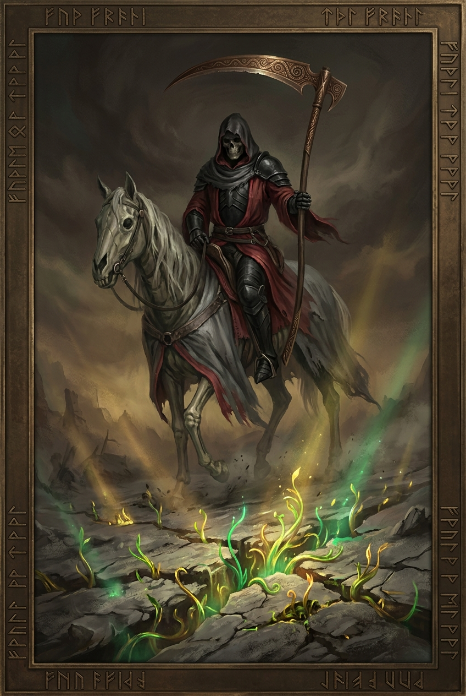
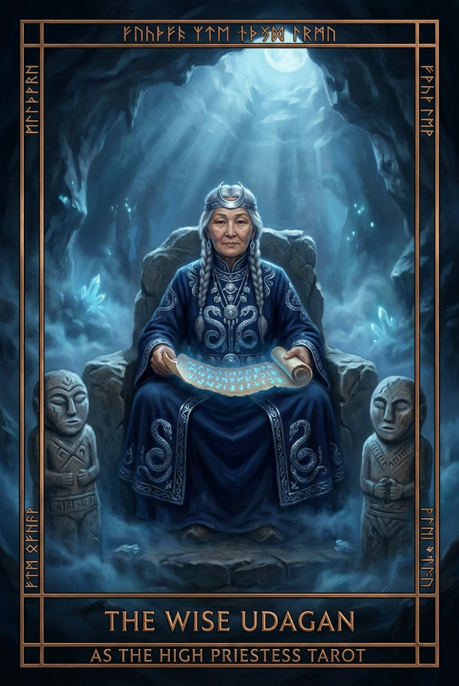
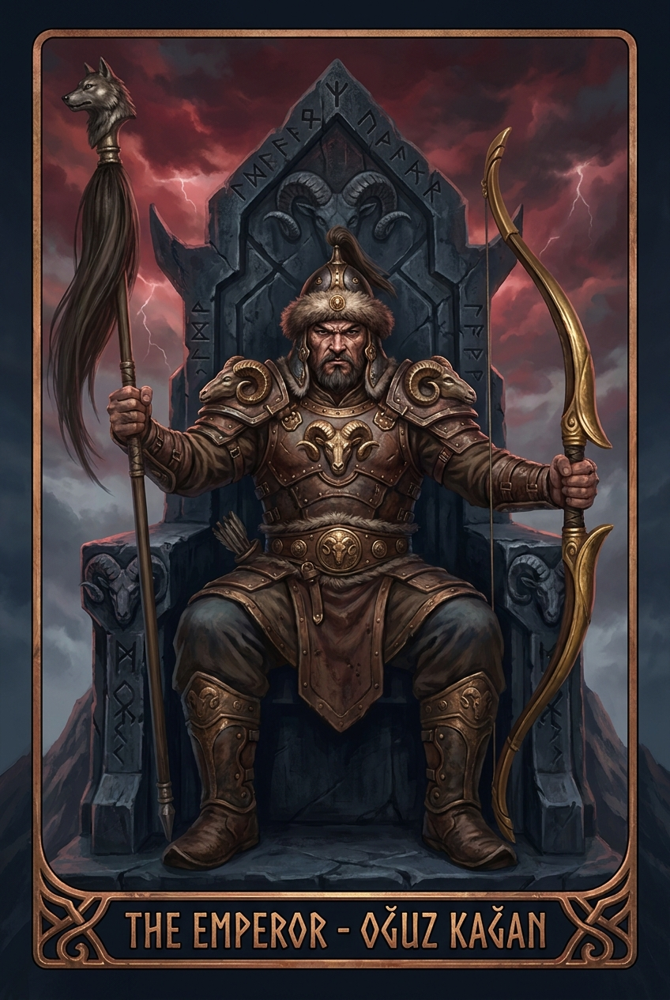
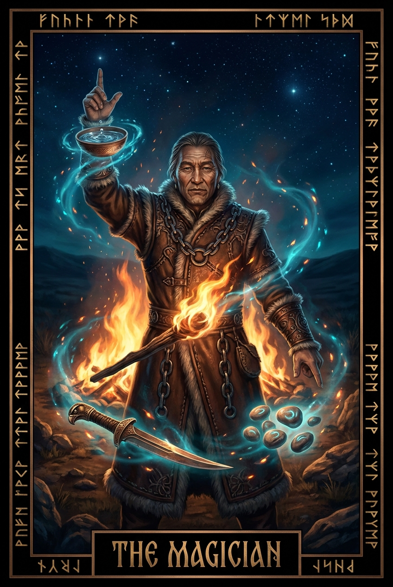
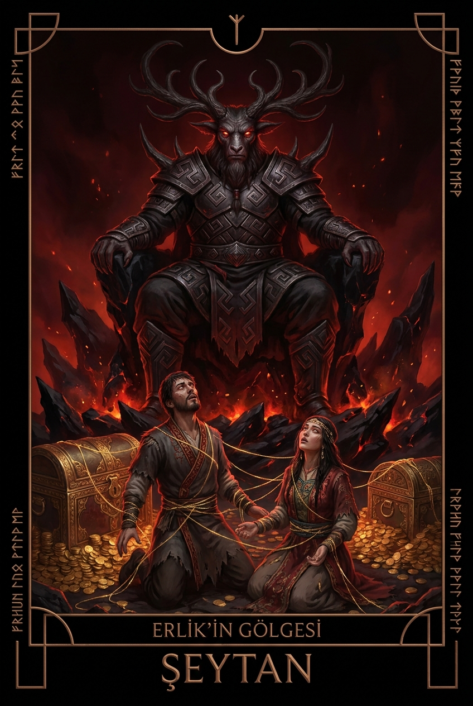
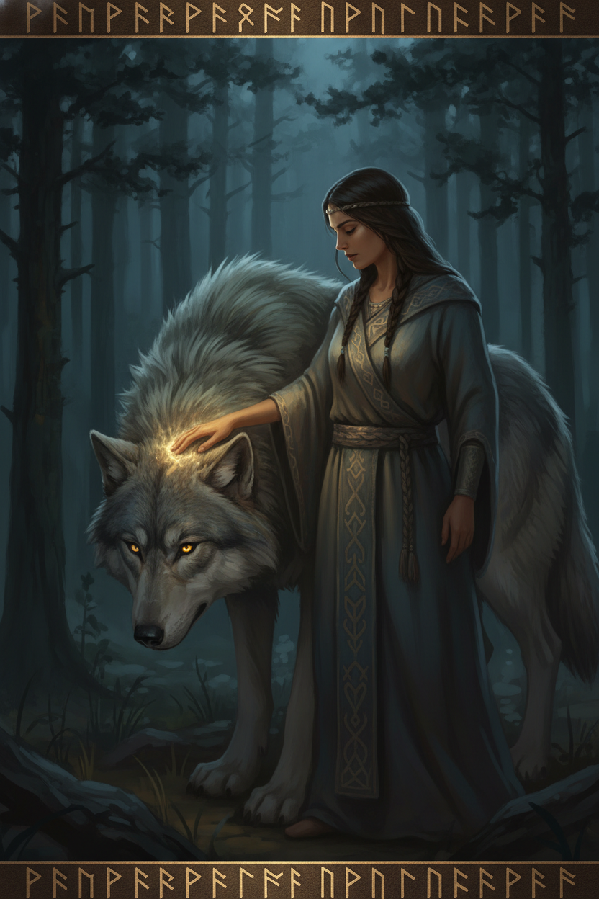

Pars
Snow Leopard / Mars
A period of swift action and solitary contemplation. The ancient tracks guide toward hidden truths.
Full Moon Intention Circle
Snow Leopard / Mars
A period of swift action and solitary contemplation. The ancient tracks guide toward hidden truths.
Great Stag / Jupiter
Wisdom roots deeply. The antlers reach for the upper realm, drawing down celestial favor.
The Celestial Reflection
Elemental Soul Balance
Transformation

THE SHAMANIC KUMALAK SPREAD

Press and hold the bone
to summon the fire.

Revealed from within the shattered bone.
What does the path ahead hold for me regarding the upcoming equinox ritual?
The winds shift beneath the Tengri sky. I sense a deep rooted Transformation waiting at the threshold.
You must gather the ashes of your previous intentions. Do not fear the dark; it is merely the womb of the next cycle.
The Oracle is listening...
Speak your intention, seeker. The weave of fate awaits. The winds from the steppes carry whispers of paths untrodden. What guidance do you seek from the ancient ones today?
(Your whispers will weave here...)
Sacred offerings and mystical artifacts.

descriptionAncient Destiny Path

visibility_offDeep Inner Journey
Basic divination credits
Imperial nomad tier
Sacred Warning: Readings and artifacts are for spiritual guidance. The future remains fluid like the wind on the steppes.
Full Moon Intention Circle
Set Your Intention
The embers of Od burn brightly within your spirit. The patterns woven reveal a resilience forged in ancestral trials. You possess a quiet strength that manifests most potently when faced with sudden winds.
The Temür roots hold firm. Voices from the steppe speak of caution in your current ventures. Listen to the silence between breaths; there lies the guidance you seek.
COSMIC ALIGNMENT
C = (Y-3) mod 12

The Snow Leopard archetype symbolizes profound power, solitary strength, and majestic grace. Those born under this sign are fiercely independent, walking their own path with quiet confidence. Lapis Lazuli represents their spiritual depth, while Madder Red signifies their vital energy and courage.